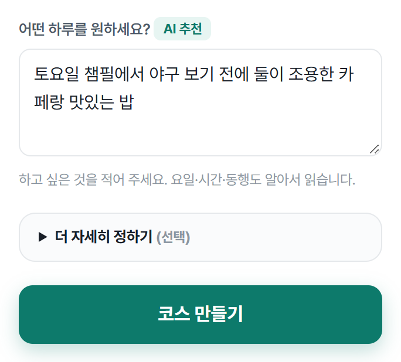
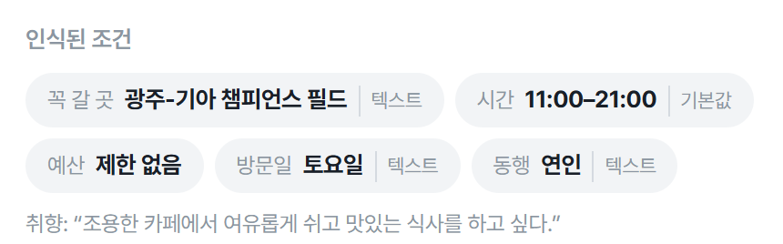
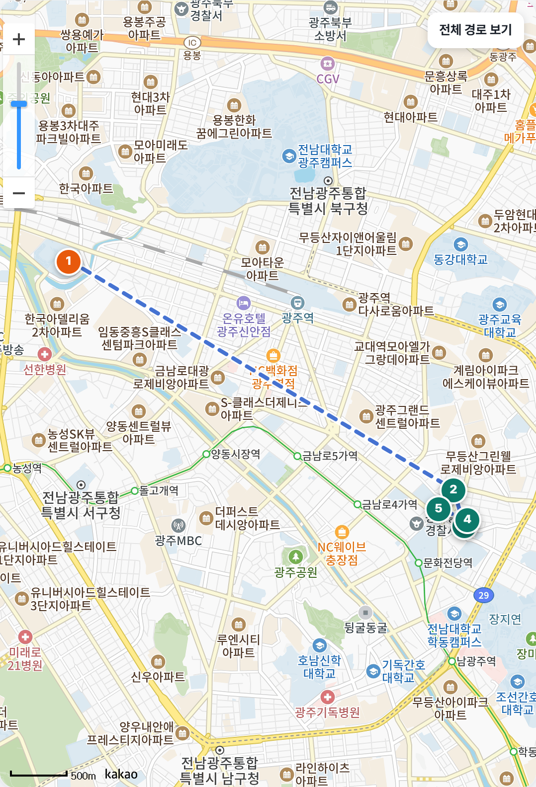

Step 1
route-fit.duckdns.org

문장 한 줄 입력
요일·시간·동행·취향을 그대로 적기
Step 2
route-fit.duckdns.org
LLM
조건 해석 · 취향 매칭

알고리즘
이동 시간 계산 · 코스 최적화
✓
영업시간 안에 방문
✓
끼니 시간에 식당
✓
실제 이동시간 반영
✓
지역상권 가게 우선
LLM 해석 + 알고리즘 최적화
판단은 알고리즘, AI는 해석과 설명
Step 3
route-fit.duckdns.org

시간표 · 지도 · 장소별 추천 이유
5곳 · 이동 47분 · 지역상권 4곳